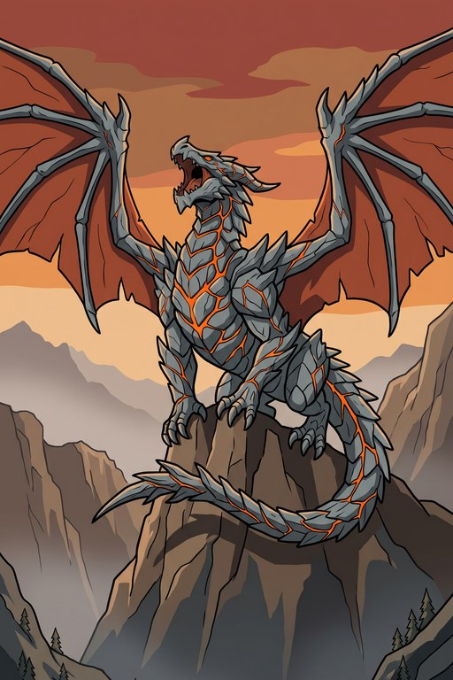
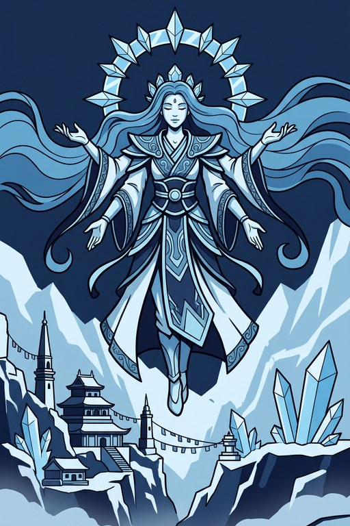
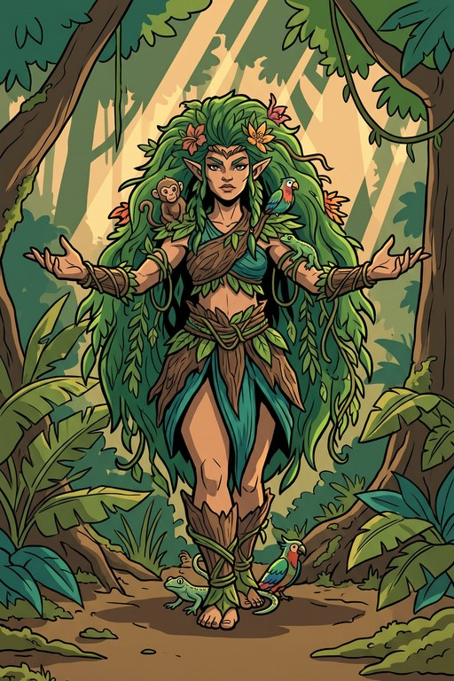
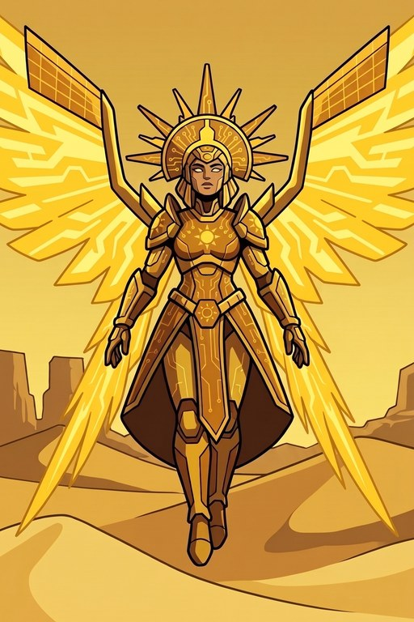

O mundo de Omnimorphos
Bem-vindo ao mundo dinâmico de Omnimorphos, onde a diversidade de formas de vida e a estratégia se entrelaçam em batalhas épicas.
O surgimento do termo “Omnimorphos”
À medida que civilizações se desenvolveram e interagiram, ficou claro que as tradições linguísticas e sociais precisavam evoluir para capturar a essência dessa pluralidade. Foi nesse contexto que nasceu o termo “Omnimorpho”. Com origem nas palavras “omni” (tudo) e “morpho” (forma), Omnimorphos refere-se a todas as formas de vida que coexistem nesse mundo dinâmico.
As comunidades de seres, que incluem desde seres elementares e criaturas míticas até formas de vida mais convencionais, adotaram Omnimorphos como um símbolo de unidade e diversidade. A palavra serve como um lembrete de que cada entidade, independente de sua aparência ou origem, contribui para o equilíbrio do ecossistema.
O apelido “Omnita”
Para facilitar a identificação e a comunicação entre as diversas espécies, o termo “Omnimorphos” foi encurtado para “Omnita”. Este apelido, utilizado informalmente por todos os seres do planeta, captura a ideia de uma coletividade vibrante e diversa, representando a interconexão entre todas as formas de vida. Omnita simboliza não apenas a pluralidade, mas também a harmonia e a coexistência que permeiam a sociedade.
A coleção inicial
O mundo é dividido em continentes, e cada continente tem muitas regiões, reinos e povos. Os baralhos desta coleção estão associados a continentes e exploram as regiões apresentadas abaixo; eles não resumem todo o continente. Próximas coleções vão explorar outras regiões e variações dos mesmos continentes.

Atharvash
Região desta coleção: Kaldran
O continente
Este continente é iluminado pelo sol ardente, com omnitas ferozes que dominam o combate rápido. Governado por Athar, o imperador da guerra, os habitantes buscam a vitória a qualquer custo.
Especialistas em causar dano, focados em acabar com o jogo rapidamente.
Governante: Athar, o imperador da guerra · Palavras-chave: Agressividade, Rapidez, Dano
Atharvash: Kaldran
Nesta primeira edição trazemos Kaldran, um dos reinos de Atharvash situado entre as montanhas vulcânicas, conhecido por seu terreno hostil e instável. Embora faça parte do continente de Atharvash, Kaldran mantém sua própria identidade e ambições.
Suas montanhas fumegantes moldaram uma sociedade resiliente, acostumada a lidar com a constante ameaça de erupções e rios de lava. Esse ambiente forjou guerreiros implacáveis e magos poderosos, criando tensões internas com outros reinos de Atharvash, enquanto Kaldran busca dominar os segredos do fogo e da terra em sua luta por supremacia no continente.
Habitantes

Kurai
Região desta coleção: Reino de Asura
O continente
Governado por Kurao, a deusa das neves e das tempestades, que traz tanto a beleza quanto o perigo do inverno. Os omnitas do Kurai são resilientes, utilizando o frio das imensas montanhas geladas como aliado em suas batalhas.
Continente gelado, focado em estratégias de controle de jogo.
Governante: Kurao, a deusa das neves e das tempestades · Palavras-chave: Controle, Frio, Resiliência
Kurai: Reino de Asura
Localizado na região mais fria e remota de Kurai, o Reino de Asura é um lugar congelante e místico, lar da deusa Asura e seus seguidores. Asura, reverenciada por sua sabedoria ancestral, ensinou a seus monges a manipulação do tempo e o controle do vazio — uma habilidade que exige extrema disciplina e esforço. As camadas dimensionais são mais finas neste território, permitindo que os seguidores de Asura desenvolvam uma conexão especial com o poder de Omnimorphos.
O objetivo dos monges de Asura é proteger o reino, especialmente contra a ameaça de Atharvash, que acredita que o vazio deve ser explorado em todo seu potencial destrutivo e está constantemente em busca de maneiras de acessar seu poder. Atharvash vê o vazio como uma fonte de poder bruto que deveria ser usado para controlar e dominar, o que coloca seus interesses em conflito direto com o propósito de Asura de manter o equilíbrio e a harmonia do reino.
Esta batalha entre o controle sobre o vazio e sua libertação define grande parte da tensão no Reino de Asura, tornando-o um ponto central de conflito e mistério no continente de Kurai.
Habitantes

Gaia
Região desta coleção: Gaia do Sul
O continente
Gaia é lar de omnitas místicos que se comunicam com os espíritos da floresta. Governado por deidades que representam a vida e a natureza, os habitantes trabalham em harmonia com a natureza.
Continente tropical resistente, focado na conexão espiritual com a natureza e estratégias de crescimento.
Governante: deidades que representam a vida e a natureza · Palavras-chave: Espiritualidade, Natureza, Harmonia
Gaia: Gaia do Sul
No vasto e exuberante continente de Gaia, onde a natureza e a magia se entrelaçam em harmonia, dois grandes poderes moldam o destino de suas terras. Ao sul, os omnitas, descendentes dos habitantes que firmaram um pacto sagrado com Gaia, a Deusa da Natureza, guardam as florestas e os segredos da terra. Esses seres, abençoados com traços e habilidades animais, foram escolhidos por Gaia para proteger a vida e o equilíbrio natural, mantendo o ciclo da existência em perfeita sintonia. Junto a eles vivem tribos humanas, simples e sábias, que, apesar de não participarem do pacto, respeitam e veneram o poder de Gaia.
Porém, um pequeno grupo traiu o caminho de Gaia. Ao norte, as Harpias — um grupo dissidente originário de Atharvash, que um dia já foram humanos comuns, outrora aliadas e que receberam as habilidades da Deusa — romperam o laço sagrado, rebelando-se contra seus ensinamentos. Embora rivais em seu território, protegem o continente contra ameaças externas como unidade.
Assim, com sua nova ideologia, as Harpias governam a região norte, dividindo o continente em duas realidades: a pureza e preservação ao sul, e a ambição e poder no norte. Esse conflito molda o destino de Gaia, mas ainda há muito a ser desvendado. Territórios inexplorados e mistérios aguardam aqueles que buscam conhecer o verdadeiro poder da terra.
Habitantes

Apólia
Região desta coleção: Civilização solar e seus desertos
O continente
Apólia é habitada por criaturas astutas que prosperam em um jogo defensivo. A deusa Apólia guia seus habitantes nos desertos e planícies a responder a cada movimento do adversário, buscando sempre a vitória através da astúcia.
Continente baseado em número de omnitas e proteção, jogando de modo responsivo ao oponente.
Governante: a deusa Apólia · Palavras-chave: Proteção, Exército, Equipamentos
Apólia: Civilização solar e seus desertos
Apólia é uma vasta região desértica, onde o sol reina imponente e as dunas se estendem até onde os olhos podem ver. Embora as condições sejam áridas, o continente prospera, abrigando grandes civilizações e criaturas místicas que coabitam em harmonia. Apólia é lar da deusa que leva seu nome, e ela guia seu povo na busca contínua pela prosperidade e inovação.
Apólia se destaca por ser a civilização mais avançada tecnologicamente em todo o mundo de Omnimorphos. Utilizando a energia solar como fonte de poder, os apolianos conseguiram dominar essa força tanto para combate quanto para o avanço de suas máquinas e tecnologias. Suas cidades são movidas a energia solar, e seu exército, composto por um impressionante contingente de 1 bilhão de soldados, montarias e omnitas místicos aliados, é conhecido por ser imbatível em batalha. Suas armas, armaduras e defesas são forjadas com o poder do sol, capazes de canalizar raios solares tanto para ataques devastadores quanto para a criação de barreiras energéticas impenetráveis.
Embora Apólia não tenha inimigos diretos, sua busca incessante pela glória e expansão de seu território leva a civilização a explorar constantemente novos horizontes. Eles valorizam a paz interna e a prosperidade de sua sociedade, mas estão sempre prontos para defender seus interesses com seu exército altamente treinado e suas tecnologias de ponta. As paisagens desérticas, banhadas pela luz do sol e guardadas por criaturas místicas, fazem de Apólia uma terra de mistério e poder, com um futuro brilhante sempre à vista.